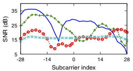

Linux 802.11n CSI Tool
Overview

An Intel 5300 NIC
This webpage contains instructions to use our 802.11n measurement and experimentation platform. The CSI Tool is built on the Intel Wi-Fi Wireless Link 5300 802.11n MIMO radios, using a custom modified firmware and open source Linux wireless drivers. We include all the software and scripts needed to run experiments, and to read and parse the channel measurements.
The IWL5300 provides 802.11n channel state information in a format that reports the channel matrices for 30 subcarrier groups, which is about one group for every 2 subcarriers at 20 MHz or one in 4 at 40 MHz. Each channel matrix entry is a complex number, with signed 8-bit resolution each for the real and imaginary parts. It specifies the gain and phase of the signal path between a single transmit-receive antenna pair.
There is more information in our tool release announcement below.

Example CSI for 4 SISO links
Publications
Users
More than our own work, we are excited about others using our platform to advance the state of the art. We are proud to list the following published papers using our tools and data. If our tool helps you in your work, please let us know!
- Okhwan Lee, Weiping Sun, Jihoon Kim, Hyuk Lee, Bo Ryu, Jungwoo Lee, and Sunghyun Choi. nc
ChASER: Channel-Aware Symbol Error Reduction for High-Performance WiFi Systems in Dynamic Channel Environment. IEEE INFOCOM 2015.
- Zhenjiang Li, Wan Du, Yuanqing Zheng, Mo Li, Dapeng Wu. nc
From Rateless to Hopless. ACM MobiHoc 2015.
- Zan Li, Torsten Braun, and Desislava C. Dimitrova.
A Passive WiFi Source Localization System based on Fine-grained Power-based Trilateration. IEEE WoWMoM 2015.
- Jian Liu, Yan Wang, Yingying Chen, Jie Yang, Xu Chen, and Jerry Cheng.
Tracking Vital Signs During Sleep Leveraging Off-the-shelf WiFi. ACM MobiHoc 2015.
- Wenyuan Liu, Xi Gao, Lin Wang, and Danyang Wang. nc
Bfp: Behavior-Free Passive Motion Detection Using PHY Information. Wireless Personal Communications, February 2015.
- Deepak Vasisht, Swarun Kumar, and Dina Katabi.
Sub-Nanosecond Time of Flight on Commercial Wi-Fi Cards. arXiv preprint arXiv:1505.03446 2015.
- Xuyu Wang, Lingjun Gao, Shiwen Mao, and Santosh Pandey. nc
DeepFi: Deep Learning for Indoor Fingerprinting Using Channel State Information. IEEE WCNC 2015.
- Chenshu Wu, Zheng Yang, Zimu Zhou, Xuefeng Liu, Yunhao Liu, and Jiannong Cao.
Non-invasive Detection of Moving and Stationary
Human with WiFi. IEEE J. Selected Areas of Communication, 2015.
- Chenshu Wu, Zheng Yang, Zimu Zhou, Kun Qian, Yunhao Liu, and Mingyan Liu. nc
PhaseU: Real-time LOS Identification with WiFi. IEEE INFOCOM 2015.
- Jeong-Woo Yang and Gi-hwan Cho.
Utilizing CSI to Improve Distance Estimation Precision in the Indoor Environment. SERSC Intl. J. Software Engineering and its Applications 2015.
- Yunze Zeng, Parth H. Pathak, and Prasant Mohapatra.
Analyzing Shopper's Behavior through WiFi Signals. ACM WPA 2015.
- Ibrahim Ethem Bagci, Utz Roedig, Matthias Schulz, and Matthias Hollick.
Short Paper: Gathering Tamper Evidence in Wi-Fi Networks Based on Channel State Information. ACM WiSec 2014.
- Arijit Banerjee, Dustin Maas, Maurizio Bocca, Neal Patwari, and Sneha Kasera.
Violating Privacy Through Walls by Passive Monitoring of Radio Windows. ACM WiSec 2014.
- Apurv Bhartia. nc
Improving Spectrum Utilization in Wireless Networks. Ph.D. Thesis, University of Texas at Austin, 2014.
- Seongho Byeon, Kangjin Yoon, Okhwan Lee, Sunghyun Choi, Woonsun Cho, and Seungseok Oh.
MoFA: Mobility-aware Frame Aggregation in Wi-Fi. ACM CoNEXT 2014.
- Yogita Chapre, Aleksandar Ignjatovic, Aruna Seneviratne, and Sanjay Jha.
CSI-MIMO Indoor Wi-Fi Fingerprinting System. IEEE LCN 2014.
- Deng Chen, Li Du, Zhiping Jiang, Wei Xi, Jinsong Han, Kun Zhao, Jizhong Zhao, Zhi Wang, Rui Li.
A Fine-Grained Indoor Localization using Multidimensional Wi-Fi Fingerprinting. IEEE ICPADS 2014.
- Yi-Chao Chen, Lili Qiu, Yin Zhang, Guangtao Xue, and Zhenxian Hu. nc
Robust Network Compressive Sensing. ACM MobiCom 2014.
- Yingjie Chen, Wei Wang, and Qian Zhang. nc
Privacy-Preserving Location Authentication in WiFi with Fine-Grained Physical Layer Information. IEEE GLOBECOM 2014.
- Jon Gjengset, Jie Xiong, Graeme McPhillips, and Kyle Jamieson.
Phaser: enabling phased array signal processing on commodity WiFi access points. ACM MobiCom 2014.
- Jon Gjengset, Graeme McPhillips, and Kyle Jamieson.
ArrayPhaser: Enabling Signal Processing on WiFi Access Points. UCL RN/14/04 2014.
- Chunmei Han, Kaishun Wu, Yuxi Wang, and Lionel M. Ni.
WiFall: Device-free fall detection by wireless networks. IEEE INFOCOM 2014.
- Dai Hanyi and Zhang Gong. nc
The Research and Tests of Wi-Fi Interference Based on IEEE 802.11n CSI-Tool. Electronic Engineer, Vol. 40, No. 1, Feb. 2014.
- Donny Huang and Rajalakshmi Nandakumar and Shyam Gollakota.
Feasibility and Limits of Wi-Fi Imaging. ACM SenSys 2014.
- Zhiping Jiang, Wei Xi, Xiangyang Li, Shaojie Tang, Ji-Zhong Zhao, Jin-Song Han, Kun Zhao, Zhi Wang, and Bo Xiao. nc
Communicating Is Crowdsourcing: Wi-Fi Indoor Localization with CSI-based Speed Estimation. Springer J. Computer Science and Technology 2014.
- Bryce Kellogg, Aaron Parks, Shyamnath Gollakota, Joshua R. Smith, and David Wetherall.
Wi-Fi Backscatter: Internet Connectivity for RF-Powered Devices. ACM SIGCOMM 2014.
- Swarun Kumar, Stephanie Gil, Dina Katabi, and Daniela Rus.
Accurate indoor localization with zero start-up cost. ACM MobiCom 2014.
- Okhwan Lee, Jihoon Kim, Jongtae Lim, and Sunghyun Choi. nc
SIRA: SNR-aware Intra-frame Rate Adaptation. IEEE Communications Letters, November 2014.
- Suchul Lee, Jaehyuk Choi, Joon Yoo, and Chong-Kwon Kim.
Frequency Diversity-Aware Wi-Fi Using OFDM-based Bloom Filters. IEEE Trans. Mobile Computing 2014.
- Suchul Lee, Jaehyuk Choi, Joon Yoo, and Chong-Kwon Kim.
Providing quality-of-service for frequency-aware Wi-Fi using OFDM-based variable-length Bloom filters. EURASIP Journal on Wireless Communications and Networking, 2014.
- Hongbo Liu, Yang Wang, Jian Liu, Jie Yang, and Yingying Chen. nc
Practical User Authentication Leveraging Channel State Information (CSI). ASIA CCS 2014.
- Rajalakshmi Nandakumar, Bryce Kellogg, and Shyamnath Gollakota.
Wi-Fi Gesture Recognition on Existing Devices. arXiv preprint arXiv:1411.5394 2014.
- Minsu Park, Okhwan Lee, Bo Ryu, Sunghyun Choi, Byeonggi Lee. nc
An Energy Efficient Rate Adaptation Method in IEEE 802.11n WLAN. Korea Information and Communications Society General Conference (Winter) 2014.
- Kun Qian, Chenshu Wu, Zheng Yang, Yunhao Liu, and Zimu Zhou. nc
PADS: Passive Detection of Moving Targets with Dynamic Speed using PHY Layer Information. IEEE ICPADS 2014.
- Swati Rallapalli.
Mobile Localization: Approach and Applications. Ph.D. Thesis, University of Texas at Austin, 2014.
- Yan Wang, Jian Liu, Yingying Chen, Marco Gruteser, Jie Yang, and Hongbo Liu.
E-eyes: Device-free Location-oriented Activity Identification Using Fine-grained WiFi Signatures. ACM MobiCom 2014.
- Zhi Wang, Jinsong Han, Wei Xi, and Jizhong Zhao.
Efficient and secure key extraction using channel state information. Springer J. Supercomputing 2014.
- Wei Xi, Xiang-Yang Li, Chen Qian, Jinsong Han, Shaojie Tang, Jizhong Zhao, and Kun Zhao.
KEEP: Fast Secret Key Extraction Protocol for D2D Communication. IEEE/ACM IWQoS 2014.
- Wei Xi, Jizhong Zhao, Xiang-Yang Li, Kun Zhao, Shaojie Tang, Xue Liu, and Zhiping Jiang. nc
Electronic Frog Eye: Counting Crowd Using WiFi. IEEE INFOCOM 2014.
- Jiang Xiao, Youwen Yi, Lu Wang, Haochao Li, Zimu Zhou, Kaishun Wu, and Lionel M. Ni. nc
NomLoc: Calibration-Free Indoor Localization with Nomadic Access Points. IEEE ICDCS 2014.
- Guanhua Wang, Yongpan Zou, Zimu Zhou, Kaishun Wu, Lionel M. Ni. nc
We can hear you with Wi-Fi!. ACM MobiCom 2014.
- Jeong-woo, Yang Gae-il An, Shin-hyo Kim, Byung-ho Chung, Tae-yeon Kim, Ki-hyun Pyun, and Gi-hwan Cho. nc
A Distance Estimation Scheme Based on WLAN RF Properties for Localization of Mobile Terminals. J. Korea Information and Communications Society, Vol. 39B, No. 7, July 2014.
- Zheng Yang, Zimu Zhou, and Yunhao Liu. nc
From RSSI to CSI: Indoor Localization via Channel Response. ACM Computing Surveys, Vol. 26, No. 2, June 2014.
- Yunze Zeng, Parth H. Pathak, Chao Xu, and Prasant Mohapatra.
Your AP Knows How You Move: Fine-grained Device Motion Recognition through WiFi. ACM HotWireless 2014.
- Xiuyuan Zheng, Chen Wang, Yingying Chen, and Jie Yang. nc
Accurate Rogue Access Point Localization Leveraging Fine-grained Channel Information. IEEE CNS 2014.
- Zenghua Zhao, Fucheng Zhang, Shaoping Guo, Xiang-Yang Li, and Junze Han.
RainbowRate: MIMO Rate Adaptation in 802.11n WiLD Links. IEEE IPCCC 2014.
- Zimu Zhou, Zheng Yang, Chenshu Wu, Longfei Shangguan, and Yunhao Liu. nc
Omnidirectional Coverage for Device-Free Passive Human Detection. IEEE Trans. Parallel and Distributed Systems 2014.
- Zimu Zhou, Zheng Yang, Chenshu Wu, Wei Sun, and Yunhao Liu. nc
LiFi: Line-Of-Sight Identification with WiFi. IEEE INFOCOM 2014.
- Heba Abdel-Nasser, Reham Samir, Ibrahim Sabek, and Moustafa Youssef.
MonoPHY: Mono-Stream-based Device-free WLAN Localization via Physical Layer Information. IEEE WCNC 2013.
- Jun Huang, Yu Wang, and Guoliang Xing.
LEAD: leveraging protocol signatures for improving wireless link performance. ACM MobiSys 2013.
- Zhiping Jiang, Jizhong Zhao, Xiang-Yang Li, Jinsong Han, and Wei Xi. nc
Rejecting the attack: Source authentication for Wi-Fi management frames using CSI Information. IEEE INFOCOM 2013.
- Muhammad Owais Khan, Vacha Dave, Yi-Chao Chen, Oliver Jensen Lili Qiu, Apurv Bhartia, and Swati Rallapalli.
Model-Driven Energy-Aware Rate Adaptation. ACM MobiHoc 2013.
- Swarun Kumar, Diego Cifuentes, Shyamnath Gollakota, and Dina Katabi.
Bringing Cross-Layer MIMO to Today's Wireless LANs. ACM SIGCOMM 2013.
- Hongbo Liu, Yang Wang, Jie Yang, and Yingying Chen.
Fast and practical secret key extraction by exploiting channel response. IEEE INFOCOM 2013.
- Ibrahim Sabek and Moustafa Youssef.
MonoStream: A Minimal-Hardware High Accuracy Device-free WLAN Localization System. arXiv.org 2013.
- Zimu Zhou, Zheng Yang, Chenshu Wu, Longfei Shangguan, and Yunhao Liu.
Towards Omnidirectional Passive Human Detection. IEEE INFOCOM 2013.
- Riccardo Crepaldi, Jeongkeun Lee, Raul Etkin, Sung-Ju Lee, and Robin Kravets.
CSI-SF: Estimating wireless channel state using CSI sampling & fusion. IEEE INFOCOM 2012.
- Sobia Jangsher, Syed Ali Khayam, and Qasim Chaudhari. nc
Application-aware MIMO Video Rate Adaptation. IEEE INFOCOM 2012.
- Suchul Lee and Chong-Kwon Kim.
D-Fi: A Diversity-Aware Wi-Fi Using An OFDM-based Bloom Filter. IEEE ICNP 2012.
- Hariharan Rahul, Swarun Kumar, and Dina Katabi.
MegaMIMO: Scaling Wireless Capacity with User Demands. ACM SIGCOMM 2012.
- Souvik Sen, Romit Roy Choudhury, and Srihari Nelakuditi. nc
SpinLoc: Spin once to know your location. HotMobile 2012.
- Souvik Sen, Božidar Radunovic, Romit Roy Choudhury, and Tom Minka. nc
You are facing the Mona Lisa: spot localization using PHY layer information. ACM MobiSys 2012.
- Jiang Xiao, Kaishun Wu, Youwen Yi, Lu Wang, and Lionel M. Ni. nc
FIMD: Fine-grained Device-free Motion Detection. IEEE ICPADS 2012.
- Jiang Xiao, Kaishun Wu, Youwen Yi, and Lionel M. Ni. nc
FIFS: Fine-Grained Indoor Fingerprinting System. IEEE ICCCN 2012.
- Kaishun Wu, Jiang Xiao, Youwen Yi, Dihu Chen, Xiaonan Luo, and Lionel M. Ni. nc
CSI-based Indoor Localization. IEEE TPDS 2012.
- Kaishun Wu, Jiang Xiao, Youwen Yi, Min Gao, and Lionel M. Ni. nc
FILA: Fine-grained indoor localization. IEEE INFOCOM 2012.
- Jizhong Zhao, Wei Xi, Jinsong Han, Shaojie Tang, Xiangyang Li, Yunhao Liu, Yihong Gong, and Zehua Zhou.
Efficient and Secure Key Extraction using CSI without Chasing down Errors. arXiv 2012.
- Apurv Bhartia, Yi-Chao Chen, Swati Rallapalli, and Lili Qiu.
Harnessing Frequency Diversity in Wi-Fi Networks. ACM MobiCom 2011.
- Souvik Sen, Romit Roy Choudhury, Božidar Radunovic, and Tom Minka. nc
Precise indoor localization using PHY layer information. HotNets 2011.
- Michelle X. Gong, Eldad Perahia, Roy Want, and Shiwen Mao.
Training protocols for multi-user MIMO wireless LANs. IEEE PIMRC 2010.
Credits
To cite this tool, the best reference is the CCR 2011 paper (BibTeX).